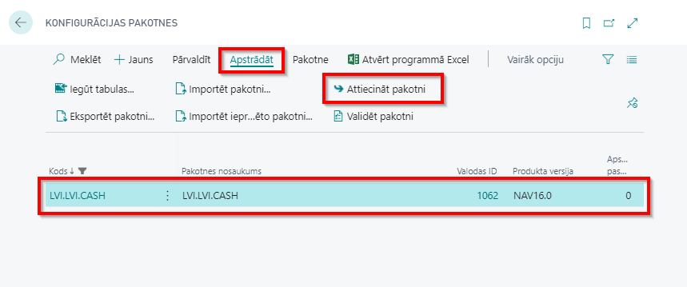
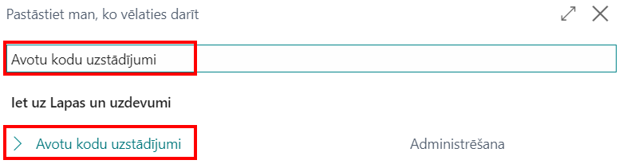
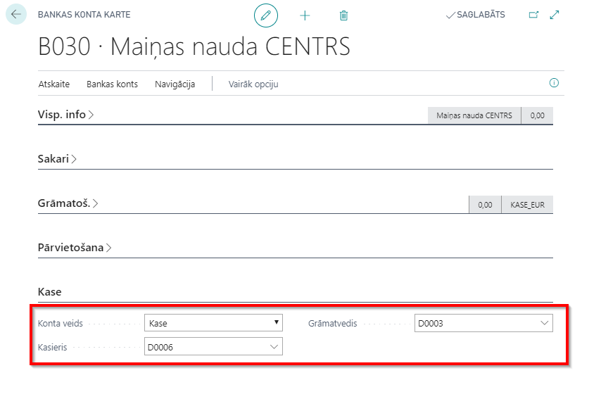

Sākam lietot
Piekļuves tiesību kopas
Lietojot Latvian Cash Management Localization ir nepieciešams piešķirt lietotājiem šādas piekļuves tiesību kopas:
- D365 JOURNALS, EDIT
- D365 JOURNALS, POST
Lomu centrs
Lai sāktu lietot Latvian Cash Management Localization, nav nepieciešami specifiski lomu centri, jo funkcionalitāte ir pieejama izmantojot pogu Meklēt lapu vai atskaiti...
Konfigurācijas pakotnes importēšana
Attiecinot konfigurācijas pakotni LVI.LVI.CASH, visi svarīgākie uzstādījumi tiek sagatavoti, lai varētu izmantot Latvian Cash Management Localization.
- Klikšķiniet uz pogas Meklēt...

- Ierakstiet Konfigurācijas pakotnes un izvēlieties sarakstu no sadaļas Lapas un uzdevumi:
- Konfigurācijas pakotņu sakarstā iezīmējiet LVI.LVI.CASH rindiņu un nospiediet pogu Attiecināt pakotni.

Konfigurācijas pakotne nodrošina šādus uzstādījumus un funkcijas:
- V/G žurnālu veidne (KASESGRAM);
- Avota kods (CASHBOOK);
- Galvenā žurnāla iedaļa (IENEMUMI skaidras naudas ieņēmumiem, IZDEVUMI skaidras naudas izdevumiem);
- Avota koda uzstādījumi;
- Sērijas numuri (KIO, KZO);
- Sērijas numuru rindas (priekš KIO, KZO).
Priekšnosacījumi
Pēc konfigurācijas pakotnes attiecināšanas nepieciešams papildināt šādu informāciju:
Ir jāizveidot kartiņa par kases darījumiem atbildīgajai personai, kasierim (-iem);
Uzņēmuma informācijā jābūt aizpildītiem laukiem:
- Nosaukums;
- Reģistrācijas numurs.
Uzstādījumi
Avota kods un Avota koda uzstādījumi
- Lai izveidotu avota kodu, klikšķiniet uz pogas Meklēt...
- Ierakstiet Avotu kodi un izvēlieties sarakstu no sadaļas Lapas un uzdevumi:
- Izveidojiet avota kodu, aizpildot laukus Kods (1) un Apraksts (2).
Aizveriet sarakstu Avotu kodi. Izveidotais avota kods ir jāpievieno avota kodu uzstādījumos.
Klikšķiniet uz pogas Meklēt...
Ierakstiet Avotu kodu uzstādījumi un izvēlieties sarakstu no sadaļas Lapas un uzdevumi:

- Veidnē Visp. info pievienojiet tikko izveidoto Kases žurnālu.
Banku kontu kontējuma grupas
Izveidojiet jaunu Bankas kontu kontējuma grupu maiņas naudai. Bankas kontu kontējuma grupas ir paredzētas, lai izveidotu saikni starp jūsu bankas kontiem un virsgrāmatas kontiem.
- Klikšķiniet uz pogas Meklēt...
- Ierakstiet Banku kontu kontējuma grupas un izvēlieties sarakstu no sadaļas Lapas un uzdevumi:

- Nospiediet Jauns.

- Koda lauciņā ievadiet kodu pēc jūsu izvēles, piemēram "KASE_EUR". Koda nosaukumam ir jābūt informatīvam. Jūs varat izmantot gan ciparus, gan burtus. V/G konta Nr. lauciņā izvēlieties nepieciešamo konta numuru no virsgrāmatas.
Aizveriet sarakstu Banku kontu kontējuma grupas.
Bankas kontu kartiņas
Ievadiet informāciju bankas kontu kartiņās (katram kases kontam jābūt atsevišķai bankas konta kartiņai).
- Klikšķiniet uz pogas Meklēt...
- Ierakstiet Bankas konti un izvēlieties to sarakstu sadaļas Lapas un uzdevumi:
- Klikšķiniet Jauns, lai izveidotu katrai uzņēmuma kasei savu kartiņu.
- Ierakstiet Bankas konta kartiņā Nosaukumu un Adresi. Numurs (Nr.) tiek automātiski piešķirts no numuru sērijas, bet nepieciešamības gadījumā to ir iespējams izveidot arī manuāli.
- Ierakstiet bankas konta kartiņā Valūtas kodu (ja tā atšķiras no vietējās valūtas) un Bankas konta kontējuma grupu (norādiet aktīvu kontu skaidras naudas darījumiem).
Tip
Ja ir nepieciešamas vairākas valūtas, tad katrai valūtai ir jāizveido sava kase!
- Ierakstiet kartiņā šādu informāciju:
- Konta veids - izvēlieties no saraksta opciju KASE;
- Kasieris - izvēlieties darbinieku no darbinieku saraksta, kas ir atbildīgs par skaidras naudas darījumiem apskatītajā lokācijā;
- Grāmatvedis - izvēlieties grāmatvedi no darbinieku saraksta.

Numuru sērija
Lai kases ieņēmumu un izdevumu orderiem tiktu automātiski piešķirti numuri, ir jāizveido numuru sērijas.
- Klikšķiniet uz pogas Meklēt...
- Ierakstiet Num. sērija un izvēlieties sarakstu no sadaļas Lapas un uzdevumi:
- Klikšķiniet uz Jauns.
- Aizpildiet laukus Kods (1), Apraksts (2) un uzklikšķiniet uz lauka Sākuma Nr. (3). Atvērsies jauns logs, kurā jums būs iespējams izvēlēties vēlamo numura sērijas formātu.
- Izvēlnē Num. sēriju rindas jums ir iespējams izvēlēties numuru sērijas Sākuma datumu, Sākuma Nr., Beigu Nr. un citus uzstādījumus.
- Ja ir nepieciešams, lai numuri tiek piešķirti automātiski, norādiet to laukā Numuri pēc noklusējuma.
Kases grāmatas žurnāla iedaļas
Kases ieņēmuma orderiem un Kases izdevuma orderiem ir jāizveido atsevišķas Kases žurnāla iedaļas.
- Klikšķiniet uz pogas Meklēt...
- Ierakstiet Kases žurnāls un izvēlieties sarakstu no sadaļas Lapas un uzdevumi:
- Atveriet lauku Iedaļas nosaukums.
- Izveidojiet divas iedaļas - Kases ieņēmumu orderiem (piemēram, KIO) un Kases izdevumu orderiem (piemēram, KZO).
Obligāti aizpildāmie lauki:
- Nosaukums (1);
- Apraksts (2);
- Korrespond. konta tips (2) - Bankas konts;
- Korrespond. konta Nr.* (3) - KASE;
- Num. sērija (5).

Tip
Ja uzņēmumam ir vairākas kases, katrai kasei var izveidot savu žurnāla veidni (V/G žurnālu veidnes) un katrai veidnei pievienot nepieciešamās iedaļas (Saistītās - Veidne - Iedaļas).
Kā to lietot
Kā lietot: Kases žurnāls
Kases žurnāls tiek izmantots lai iereģistrētu, iegrāmatotu un izdrukātu kases ieņēmumu un izdevumu orderus. Katram kases reģistram ir jāizvēlas atbilstoša žurnāla iedaļa. Nepieciešams ievadīt šādu informāciju:
Grāmatošanas datums- datums, kad darījums ir iegrāmatots
Dokumenta tips:
- Maksājums- izmanto kases ieņēmumu orderiem
- Naudas atgriešana- izmanto skaidras naudas izņemšanai
Dokumenta Nr. - Kases ieņēmumu/ izdevumu ordera kārtas numurs, tiek aizpildīts automātiski atbilstoši Num.Sērijas uzstādījumiem.
Konta tips:
- Izvēlieties Klients, lai iereģistrētu no klienta saņemtu naudu vai veicot klientam atmaksu. Darījumam jāparādās Klientu grāmatas ierakstos.
- Izvēlieties Piegādātājs, lai reģistrētu piegādātājiem samaksātu naudu vai saņemtu atmaksu no piegādātāja. Darījumam ir jāparādās Klientu grāmatas ierakstos;
- Izvēlieties V/G konts, lai reģistrētu naudu ceļā vai cita veida izdevumus.
Konta Nr.- izvēlieties saistīto Klienta/Piegādātājs/ Virsgrāmatas kontu no saraksta - atkarībā no izvēlētā Konta tipa.
Apraksts- ievadiet aprakstu, kas tiks parādīts Kases ieņēmumu/ izdevumu orderī.
Darbinieka Nr.- izvēlieties no darbinieku saraksta atbildīgo personu, kas veica kases darījumu.
Personas identifikācijas Nr. - definējiet darījuma partnera identifikācijas numuru.
Personas identif.dok.inform. - ierakstiet informāciju par personu apliecinošu dokumentu
Pielikuma nosaukums - teksta ievades lauks papildus informācijai, kas nepieciešama kases ieņēmumu/ izdevumu orderī.
Debeta summa
Kredīta summa
Summa
Korespond. konta tips - izvēlieties kādu no kases bankas kontiem.
Korespond. konta Nr. - Kases konta numurs
Kā lietot: Kases izdevumu ordera sagatavošana
Latvian Cash Management Localization sniedz iespēju sagatavot Kases izdevumu orderi Dynamics 365 Business Central un sagatavotu izdrukas, lai izpildītu Latvijā noteiktās normatīvo aktu prasības.
Mērķis: Maiņas naudas izdevumu orderi ir jāreģistrē sistēmā un jānodrošina iespēja tos izdrukāt katram darījumam atsevišķi.
Pieejami izdrukai no: atskaites var izdrukāt Kases žurnāla rīkjoslā - Drukāt kases izdevumu orderi.
Kases izdevumu orderi iegrāmatotam darījumam var izdrukāt arī izmantojot atskaiti Kases izdevumu orderis. Šajā gadījumā drukas iestatījumos jāizmanto filtrs Bankas kontu grāmatas ieraksti.

Priekšnosacījumi: Bankas konta kartiņā ir jābūt norādītam Kasierim un grāmatvedim. Bankas konta kartiņā ir jābūt izvēlēta atbilstoša Bankas kontējumu grupa, norādīts Personas identifikācijas Nr., kā arī, Personas identif.dok.inform. Šie lauki ir jāaizpilda obligāti. Kases žurnāla sadaļā IZDEVUMI ir jābūt izveidotām rindiņām:
- Dokumenta tips: Maksājums
- Summa: Pozitīva
Drukas iestatījumi: ir pieejami šādi drukas iestatījumi:
- Drukāt saņemšanas informāciju vārdiem – ja aktivizēts, summa vārdiem dokumenta izdrukā tiek iekļauta blakus laukam Saņemts.
- Atskaites sagatavošanai var arī piemērot V/G žurnāla rindu filtru.
Kad drukas iestatījumi ir veikti, ir iespējams izvēlēties nepieciešamo darbību starp Sūtīt (kam), Drukāt, Priekšskatījums un Atcelt.

Kā lietot: Kases ieņēmumu ordera sagatavošana
Latvian Cash Management Localization dod iespēju sagatavot Kases ieņēmumu orderi Dynamics 365 Business Central un izdrukāt to, lai nodrošinātu Latvijā noteiktās normatīvo aktu prasības.
Mērķis: Maiņas naudas ieņēmumu orderi ir jāreģistrē sistēmā un jānodrošina iespēja tos izdrukāt katram darījumam atsevišķi.
Iespējams izdrukāt no: Kases žurnāla rīkjoslas opcija Drukāt kases ieņēmumu orderi.
Kases ieņēmumu orderi iegrāmatotam darījumam var izdrukāt arī izmantojot atskaiti Kases ieņēmumu orderis.
Priekšnosacījumi: Kasierim un grāmatvedim ir jābūt norādītam Bankas konta kartiņā. Bankas konta kartiņā jābūt izvēlēta atbilstoša Bankas kontējumu grupa, norādīts Personas identifikācijas Nr., kā arī, Personas identif.dok.inform. Šie lauki ir jāaizpilda obligāti. Kases žurnāla sadaļā IENEMUMI ir jābūt izveidotām rindiņām:
- Dokumenta tips: Maksājums
- Summa: Negatīva
Drukas iestatījumi: Drukas iestatījumos var tikt piemērots V/G žurnāla rindu filtrs.

Kad drukas iestatījumi ir veikti, ir iespējams izvēlēties nepieciešamo darbību starp Sūtīt (kam), Drukāt, Priekšskatījums un Atcelt.
Kā lietot: Kases grāmatas izdruka
Latvian Cash Management Localization dod iespēju reģistrēt Kases ieņēmumu un izdevumu orderus Dynamics 365 Business Central un pārskata perioda beigās uzrādīt visas veiktos maiņas naudas darījumus vienā atskaitē - Kases grāmatā, izpildot Latvijā noteiktās normatīvo aktu prasības.
Mērķis: Kases grāmatas satur visus maiņas naudas darījumus atlasītajā periodā.
Iespējams izdrukāt no Meklēt Lapu vai atskaiti logā ieraksta Kases grāmata.
Priekšnosacījumi: Atlasītajā pārskata periodā jābūt iegrāmatotiem skaidras naudas ieņēmumu un izdevumu orderiem attiecīgā bankas kontā.
Drukas iestatījumi: šai izdrukai ir pieejami šādi izdrukas iestatījumi:
- Atskaites Nr. – ievadiet numuru, kam jābūt Kases grāmatas izdrukā;
- Nr. - izvēlieties bankas kontu, kura tips ir kase;
- Datuma filtrs - ievadiet pārskata periodu, par kuru nepieciešams izdrukāt kases grāmatu.
Kad drukas iestatījumi ir veikti, ir iespējams izvēlēties nepieciešamo darbību starp Sūtīt (kam), Drukāt, Priekšskatījums un Atcelt.